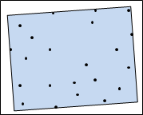
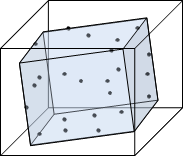
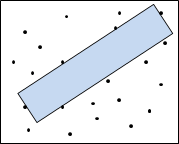
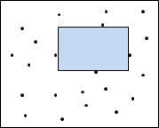
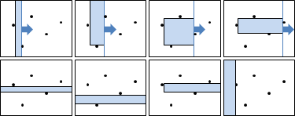

Rectangle
Minimum Enclosing Rectangle / Minimum Bounding Box
二維平面的矩形，包圍所有點。可令面積最小、令周長最小。
凸包，旋轉卡尺。O(NlogN)。
http://cgm.cs.mcgill.ca/~orm/maer.html
http://mathoverflow.net/questions/23849/
UVa 819 10173 ICPC 5138
http://cgm.cs.mcgill.ca/~orm/mper.html
UVa 12307
Minimum Bounding Volume
三維空間的長方體，包圍所有點，體積最小。
三維旋轉卡尺？正確性不明。O(N^3)。
UVa 12308
Maximum Empty Rectangle
Largest Empty Rectangle among a Point Set. Jeet Chaudhuri, Subhas C. Nandy. 1999.
O(N^3)。
Maximum Empty Orthogonal Rectangle
二維平面的矩形，不含任何點，矩形擺正，面積最大。
平面邊界四個角落補點，窮舉每一點當作矩形左（與右）邊界，然後依序掃描右方（與左方）的點作為右（左）邊界，掃描過程中隨時更新上下邊界。另外，矩形的左右邊界可能是平面的左右邊界。O(N^2)。
Divide and Conquer。O(N*(logN)^3)。
http://citeseerx.ist.psu.edu/viewdoc/summary?doi=10.1.1.210.5774
UVa 10043
Maximum Weight Box
二維平面上有許多點，每個點有權重，有正有負。找到一個擺正的矩形，內部所有點的權重總和最大。
https://cs.uwaterloo.ca/~tmchan/optbox_cccg.pdf
O(N^2)。
Minimum Enclosing Square Annulus
二維平面的方環，包圍所有點。可令寬度最小、令面積最小。
ICPC 6121
Circle
Minimum Enclosing Circle
二維平面的圓，包圍所有點，面積暨周長暨半徑最小。
一個圓包圍所有點，半徑相對伸縮後，一個點歸屬所有圓。
圓心位於Farthest Point Voronoi Diagram的頂點上。O(NlogN)。
半平面交集，randomized incremental method。平均O(N)，最差O(N^2)。
UVa 10005 11681
Minimum Bounding Sphere
三維空間的球，包圍所有點，體積暨表面積暨半徑最小。
Welzl's Algorithm。平均O(N)。
http://www.inf.ethz.ch/personal/gaertner/miniball.html
UVa 10095
Minimum k Enclosing Circle
二維平面的圓，包圍k個點，面積暨周長暨半徑最小。
Order k Voronoi Diagram。O(NlogN + k^2 * N)。
二分搜尋半徑r。窮舉每個點，作為圓邊界，顯然圓心與該點相距r。旋轉的掃描線，圓繞該點一圈。O(logR * N * NlogN)。
承上，只取鄰點來掃描，以該點為中心，取正方形邊長4r之內所有點，確保點數低於k(16r²)/(πr²) < 5.1k。Range Tree。O(logR * N * (klogk + (logN)^2))。
ICPC 7488
Maximum Empty Circle / Maximum Inscribed Circle
二維平面的圓，不含所有點和邊，面積暨周長暨半徑最大。
一群點最大空圓：圓心位於Voronoi Diagram的頂點上。如果平面有邊界，那麼圓心也可能在邊上。O(NlogN)。
凸多邊形最大內切圓：每條邊同時往垂直方向等速內縮。每條邊配合左右鄰邊的角平分線，就可求得消失所需距離。現在換個角度來看，不內縮了，改為預測最快消失的邊，刪除此邊，左右鄰邊延長銜接於一點，就縮小問題範疇了。所有邊放入二元樹，按照消失順序排序，每當刪除一條邊就更新二元樹。O(NlogN)。
凸多邊形最大內切圓：二分搜尋內切圓半徑，以半平面交集驗證。O(NlogR)。
UVa 11257 ICPC 3890
簡單多邊形最大內接圓。【待補文字】
正交多邊形最大內接圓。【待補文字】
ICPC 2994
Minimum Enclosing Annulus
二維平面的環，內圍外圍圓心相同，包圍所有點。可令寬度最小、令面積最小。
建立Voronoi Diagram與Farthest Point Voronoi Diagram，窮舉三種情況。O(N^2)。
一外三內：窮舉外點；窮舉圓心，即Voronoi Diagram的點。O(N^2)。 兩外兩內：窮舉Voronoi Diagram的邊， 窮舉Farthest Point Voronoi Diagram的邊， 兩邊求交點，作為圓心。O(N^2)。 三外一內：窮舉內點；窮舉圓心，即Farthest Point Voronoi Diagram的點。O(N^2)。
Maximum Empty Annulus
http://citeseerx.ist.psu.edu/viewdoc/summary?doi=10.1.1.67.1095
Triangle
Minimum Enclosing Triangle
二維平面的三角形，包圍所有點。可令面積最小、令周長最小。
http://citeseerx.ist.psu.edu/viewdoc/summary?doi=10.1.1.175.2381
Maximum Empty Triangle
二維平面的三角形，不含任何點，面積最大。
當平面沒有邊界，這個問題沒有討論意義；把三角形壓扁、拉長，即不含任何點、面積無限大。
如果設定了三角形的角度範圍，那麼就有討論意義了。
如果給定的平面擁有一個長方形邊界，然後多邊形是凸的呢？ 這個時候就不會有面積無限大的多邊形了吧？ 不是凸的形狀，就只能採用「頂點屬於給定的點集合」。 若是凸的形狀（如三角形、長方形、凸多邊形、圓形）， 除了可以採用「頂點屬於給定的點集合」， 也可以採用「邊界碰到給定的點集合」。 這種時候就不知道如何命名了。
UVa 10112
Extremum Triangle
二維平面的三角形，一群點挑三點作為頂點。可令面積最小最大、令周長最小最大。
面積最小最大：點線對偶。O(N^2)。
http://3glab.cs.nthu.edu.tw/~spoon/courses/CS631100/Lecture09_handout.pdf
Convex Polygon
Minimum Enclosing Convex Polygon = Convex Hull
凸多邊形，包圍所有點，面積暨周長最小。
即「Convex Hull」。
Maximum Empty Convex Polygon
（Largest Empty Convex Subset）
凸多邊形，不含任何點，一群點挑幾個點作為頂點。可令頂點最多、令面積最大、令周長最大。
頂點最多：點線對偶，掃描線。O(N^3)。
Minimum Enclosing Convex k-gon
凸k邊形，包圍所有點，可令面積最小、令周長最小。
http://cs.smith.edu/classwiki/images/c/c8/Mitchell.MinPerim.pdf
Extremum Empty Convex k-gon
（Largest Empty Convex Subset）
凸k邊形，不含任何點，一群點挑k個點作為頂點，可判斷是否存在、令面積最小最大、令周長最小最大。
判斷是否存在：NP-hard。
http://citeseerx.ist.psu.edu/viewdoc/summary?doi=10.1.1.32.5466
面積周長最小最大：O(k*N^3)。
http://citeseerx.ist.psu.edu/viewdoc/summary?doi=10.1.1.419.8207
面積周長最大：O((kN + NlogN) * logN)。運用「SMAWK Algorithm」得加速到O(kN + NlogN)。
ICPC 2674
Extremum Convex k-gon
凸k邊形，一群點挑k個點作為頂點。可判斷是否存在、令面積最小最大、周長最小最大。
判斷是否存在，即「Erdős-Szekeres Conjecture」。
演算法同上。
Extremum Convex Hull of k Points
凸多邊形，邊界暨內部恰有k個點。可判斷是否存在、令面積最小最大、周長最小最大。
演算法同上。
Polygon
Minimum Simple Polygon
簡單多邊形，所有點作為頂點，可令面積最小、令邊長最小。
NP-hard。
UVa 12386
Longest Segment in Simple Polygon
簡單多邊形，內部最長線段。
最長線段：必然碰到其中兩個頂點，否則可以旋轉線段變得更長。窮舉兩頂點，計算線段與多邊形交點。O(N^3)。
最長對角線：O(N*(logN)^3)。
ICPC 4756
Maximum Convex Polygon in Simple Polygon
（Potato Peeling）
簡單多邊形，內部最大凸多邊形。把凹凹凸凸削平。
O(N^7)。